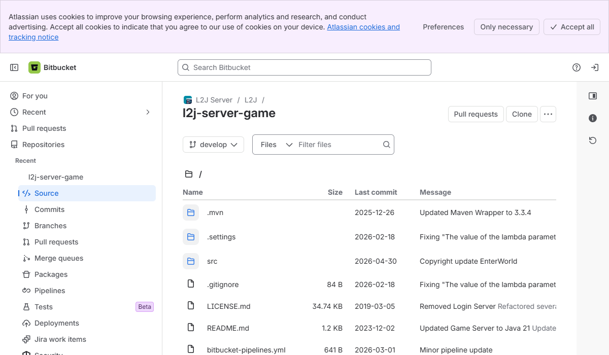
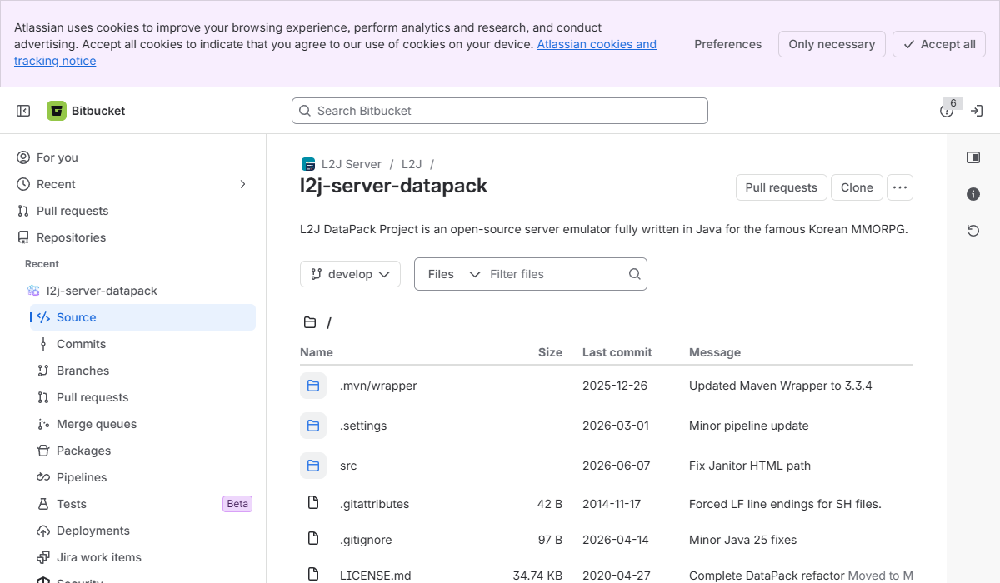
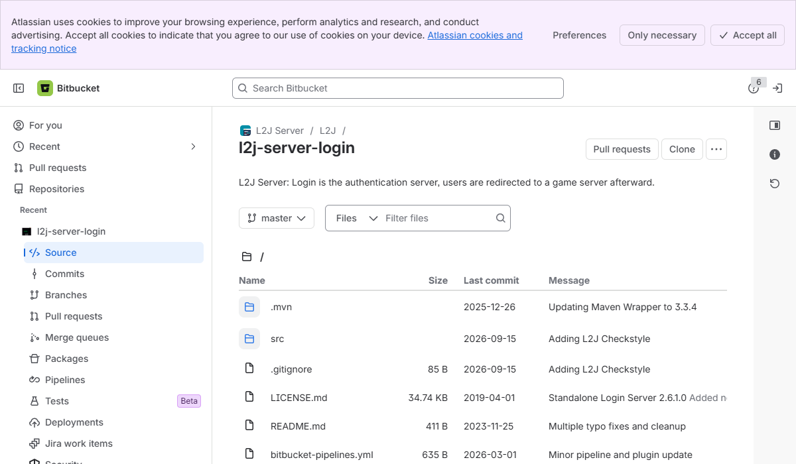
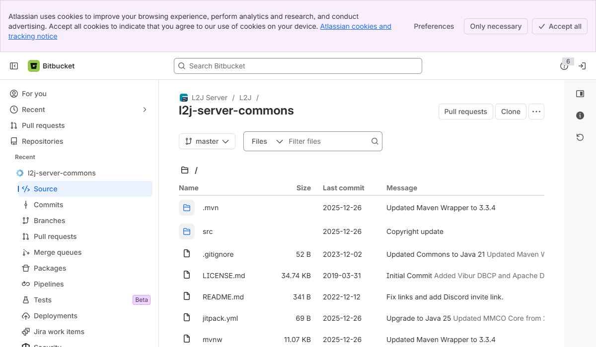
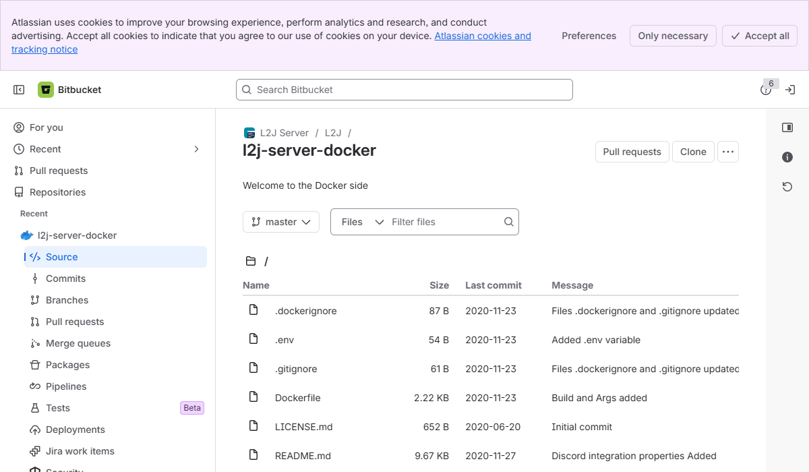
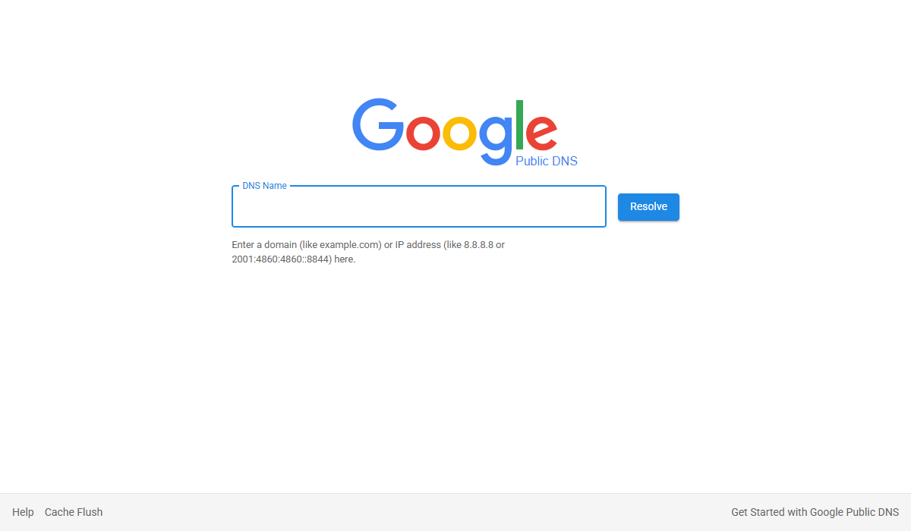
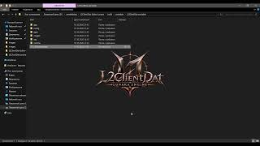
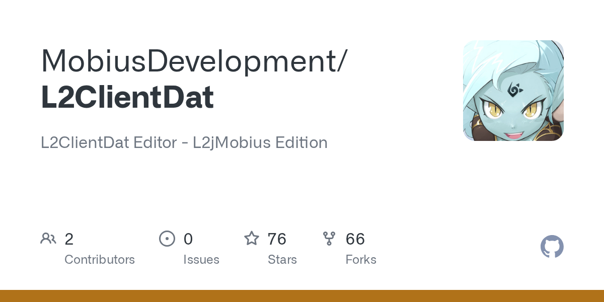
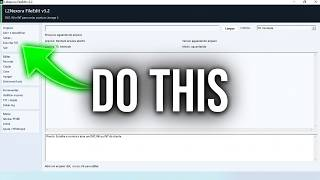
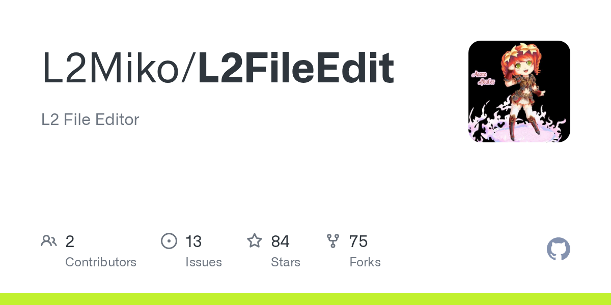

L2J oficial (Bitbucket), Mobius e editores de cliente.
| Vídeo | Projeto | O que faz | Pasta de origem | |
|---|---|---|---|---|
| sem vídeo |  | L2J oficial · game server | Core do servidor L2J oficial (Java). Mantido no Bitbucket. | fora do GitHub (Bitbucket / site oficial) |
| sem vídeo |  | L2J oficial · datapack | Datapack oficial: NPCs, quests, scripts e configuração do mundo. | fora do GitHub (Bitbucket / site oficial) |
| sem vídeo |  | L2J oficial · login server | Login server oficial (autenticação das contas). | fora do GitHub (Bitbucket / site oficial) |
| sem vídeo |  | L2J oficial · commons | Biblioteca comum usada pelo game e pelo login. | fora do GitHub (Bitbucket / site oficial) |
| sem vídeo |  | L2J oficial · docker | Docker com game + login + banco prontos para subir. | fora do GitHub (Bitbucket / site oficial) |
| sem vídeo |  | L2J · site oficial | Site do L2J: downloads, fórum e documentação. | fora do GitHub (Bitbucket / site oficial) |
| sem vídeo | MobiusDevelopment/L2J_Mobius | L2J Mobius: servidor de Lineage II (Interlude/Essence e derivados). | L2J SERVER / LJ2MOBIUS | |
 Редактор L2ClientDat Editor Lunara |  | MobiusDevelopment/l2clientdat | Editor de L2ClientDat (arquivos .dat do cliente). | L2J SERVER / LJ2MOBIUS |
 L2JNEXORA L2FileEdit v3 2 Release |  | L2Miko/L2FileEdit | L2FileEdit: edita arquivos do cliente Lineage II. | LINEAGE II DEV SERVERS / L2FILE EDIT |